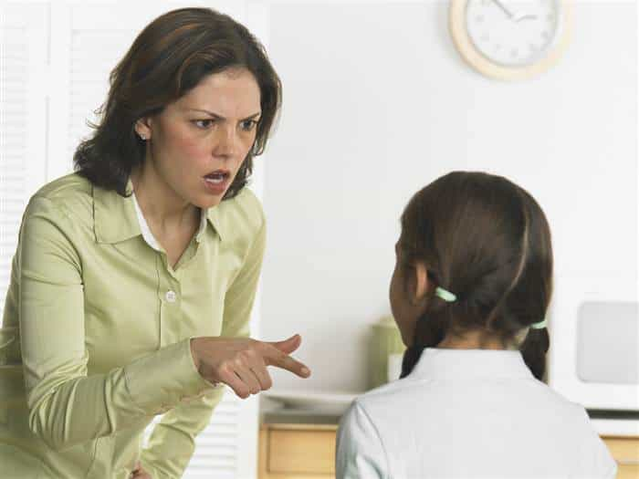

A mother is simply a female who gives birth to a baby. A mom is a woman who gives birth and then puts the needs of her child before hers and raises them properly and to the best of her ability. Mothers generally take the easy way out and are selfish. Moms do what’s necessary no matter how difficult in any and all situations and don’t have a selfish bone in her body when it comes to her kids. Simply put, mothers are bad moms, and moms are good moms.
Now on the birth certificate it says mother and father, meaning the biological mother and biological father. When people say the word “mother,” what gets lost in translation is the biological connotation of the word. We automatically assume that if a woman is a mother, she must be a mom.
And people might say “Well Donovan, there’s no difference between a mother and a mom….they’re the same thing”

Mothers (read: bad moms) never read to their children
And those people would be wrong. It’s easy to become a mother: just let a guy fuck you without a condom and shoot his load in you, and if you happen to be fertile and ovulating, you get pregnant. The real work begins after you have the kid and that’s what separates the mothers from the moms.
When we hear and see things involving childbirth, we attach this moniker to it called “The miracle of childbirth.” It tricks us into putting “mother” and “mom” in the same category. We see commercials with beautiful, inspirational music in the background, we see the nurse gently hand the newborn to the mother who’s overcome with emotion as she meets her child for the first time, and we see the proud father looking on. The whole scene is this rosy image of what childbirth is like.
When we see stuff like this the human mind envisions the most elegant form of conception. We see a husband and wife slowly making sweet love in missionary position and looking into each other’s eyes as if they know that this is the day they’ll conceive. We imagine this rosy little scene and assume that the wife will be a good mom, and that the husband will be a good dad and everything will be alright.
But most pregnancies don’t happen this way. Most of us are conceived through hard, rough sex. The inseminator is fucking her doggy style, he’s pulling her hair, smacking her ass calling her names while she’s moaning like a slut telling him to pound her harder.
It doesn’t take an act of congress to get knocked up.
He shoots his load in her, they smoke a cigarette or whatever their post coital activities normally are, and they have no idea he just got her pregnant. That’s how most pregnancies happen. It’s far from this rosy sweet love making session.
In either case, becoming a mother is the easy part. There’s nothing heroic, difficult, or arduous about getting raw dogged then pumped full of pain killers and popping out a kid. But childbirth has been exaulted and pedestalized to the masses as if it’s some monumentous feat of valor and strife. That’s one of the many reasons why most mothers in America are terrible fucking moms.
They essentially ride the coat tails of the 17 hours of labor and epidural inspired childbirth throughout their kid’s childhood. They think that going through 9 months of pregnancy and having the kid is all they need to do to get all the accolades of being a mom. But here’s the rub:
Giving birth doesn’t make a woman a MOM!
It makes her a mother at that point and nothing more. And unfortunately for most American children, most American mothers are not interested in being moms. Not in the least.
A few examples
DISCIPLINE
Mothers don’t normally discipline their children as they should. It’s easy to let them get away with shit because then her kids “like her” all the time which is why they’re easy on them in the first place. But mothers go easy on their kids for selfish reasons and that reason is that they don’t want to feel like their children “hate” them. They don’t want to deal with the crying and screaming or fit throwing. Mothers don’t subject themselves to the difficulties of motherhood.

Moms aren’t afraid to discipline their child(ren).
A mom, however, consistently does the difficult tasks like disciplining her children. She’ll endure the crying and screaming. She’ll tolerate the fit throwing. A mom is willing to pay the price to do the right thing for her kids because, again, she’s putting the needs of her children before her own. She’s willing to take the arrows in the short term to help mold her children into good and decent human beings in the long term.
ATTENTION WHORING
A mother uses her children to bring attention to herself and not her children. Sure, she’ll post pictures of them on social media, but she’s checking the likes every five minutes and if she gets 100, she’s not saying “Hey look Junior, your picture got 100 likes!” Nope. She’s not even thinking about him when she refreshes that page. She is only thinking of herself.

“OMG I luv being a mom!!”
Mothers also like to give their kids unique names spelled in “unique” ways like Jaedyn, Ostyn, or Ginnyphur (pronounced “Jennifer,” and yes, gentlemen, I’ve seen all of these names). They don’t do this for the kids. They do this so other people can pay more attention to them than other mothers.
ACTIVITIES
A mother takes Junior to soccer practice and his games and lets everyone know it on social media. Every picture she takes of him to show everyone how handsome he is in his uniform. But she’s also in the picture, with her hair done, full makeup, wearing a shirt that shows 75% of her tits to show everyone what a great “mom” she is.
But if you ask her how Junior played that day, she wouldn’t know because she spent half the time on her phone taking selfies and texting the two dudes she’s fucking in hopes that one is free later.
Mothers only pay attention to their phones
Sure, she may have gotten a few seconds of footage of her actual son in the game but the camera turns right back to her so she can tell everyone on her Facebook page that being a mom is the “toughest job I’ve ever loved!” Then she’ll turn her attention right back to her phone to see if Kevin responded about their date tonight and if he liked her picture.
A mom would take her kid to practice and games and actually pay attention him. She’ll make sure he has a post-game snack, she’ll cheer him on, and encourage him when he screws up. Unlike the mother, mom could tell you everything he did on the field from start to finish and when she finally digs her phone out of her purse, she’ll take a picture and post it on social media because she, too, is proud of him and entitled to show him off. But she’s nowhere to be found in those pictures and if she is, the kid takes up most of the screen because he is the priority.
MEN
Simply put, mothers regularly put men before her kids. A mother would drop her kids off with whoever was available so she can go out and get fucked by whoever she swiped right for earlier in the day.
If she can’t find a sitter, she’ll let a man neither she or her children know into the home so she can get dick. She also brings random men around her children all the time regardless of how long she’s been fucking him, regardless of whether she really knows him or not.
Nevermind the fact that her kids can hear what’s going on. Nevermind the fact that her kids are confused as to why mom has a different man around them every week. A mother simply says to herself “They don’t know what sex is, they’ll be alright” or “They’ll get over it”.
A mom is careful with whom she dates and is especially careful about bringing men around her children. She understands that being selfish and irresponsible in this way will have negative effects on her kids and will cause them to resent her later on. A mom knows that in order to be a MOM, sometimes she has to sacrifice her need for male attention and validation (God forbid).
The bottom line…
Any horny woman with a few eggs to drop can open her legs and take a man’s load. That’s the easy part, which is why most women have kids, but it takes a woman who is dedicated to her children, puts their needs before hers, and does what’s necessary to raise them properly regardless of how difficult it may be. Mothers don’t make sacrifices for the betterment of her child(ren). Moms do.
Mother’s Day shouldn’t be celebrated for baby mamas or hos with a bunch of kids who only pretend to give a shit about their kids on social media or when she thinks the world is watching. It should be changed to Mom’s Day for the real moms of the world to be celebrated for the hard work and sacrifices they make the bring their children up the way they should be and not the way the public thinks they are.
Watch the podcast version of this article below:
Tune into Donovan’s show, TSR: Live with Donovan Sharpe, weekday afternoons at 5EST/2PST on YouTube. Listen or watch all episodes on thesharpereality.com, itunes, or Soundcloud.
Read Next: The True Story Of A Carousel-Riding Military Wife